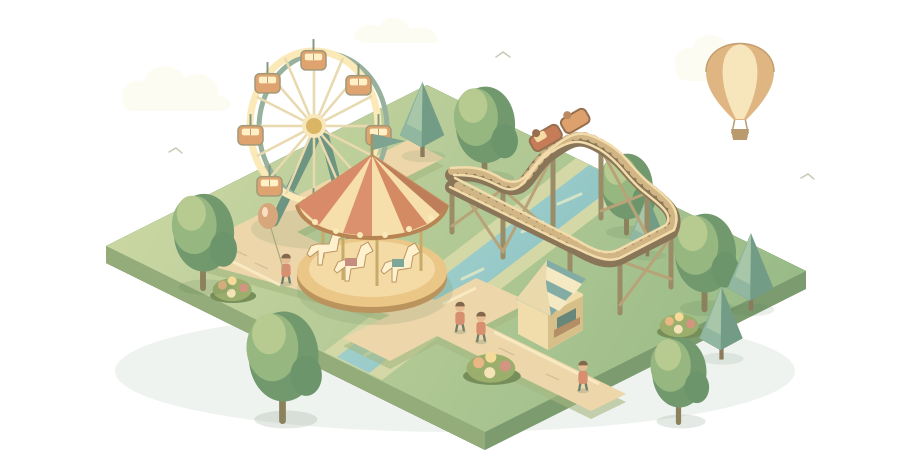

雲霄歡樂園把想像，鋪成下一段旅程。
先有路，再有歡笑
1. 選步道工具，點格子預覽再「確認建造」。桌面按住 Shift 拖曳可連續鋪路。2. 遊具入口固定在南側紅白門。入口必須鋪排隊道，連回園門的一般步道。不同遊具的排隊道不可接在一起。3. 點遊具「開放營業」，再開園、繼續。遊客走路、排隊、付費並消耗體力；補給站入口也在南側。
軌道：放下站台，按方向逐段鋪設。綠點是下一段終點；方向 R 只影響新站台。左／右彎先轉向再前進一格。上坡會消耗速度，鏈提能拉升；高速彎前與回站前可加煞車。閉環要回到同高度、同朝向的站台。試車曲線和營業列車共用同一物理資料。
按方向鍵移動格子游標，Enter 預覽／確認；Esc 取消工具；Space 暫停；R 旋轉新站台朝向。地圖可拖曳平移、滾輪或雙指縮放；觸控也可使用放大、縮小、方向鍵與總覽。縮放不影響模擬。
營運每 20 秒，每座開放遊具支出 $2、每位員工工資 $2。員工從入口步行維修或清潔。整地每格 $60；拆除回收一半材料，無法撤回所有成本。關門不會讓現有客人消失。滿意度低於 25 持續 120 秒、現金跌破情境破產線或期限到時失敗。
每座樂園都有自己的營運委託：從搶修老園、跨湖分流，到低緩環湖線及交織軌道。委託以真實接待與營運成果推進，後續工程可提前規劃。可隨時暫停規劃，沒有最低等待時間。商店有庫存，售罄需選取店鋪補貨；廁所使用清潔耗材。 新遊具有不同場次、容量、營運及維修費。擺盪與轉動可能使遊客暈眩，長椅、觀景列車或小劇場可幫助歇腳；迷宮則會增加疲勞和口渴。新增水上設施需在水岸一格內的完整陸地建造。暫停和離開分頁不會繼續扣款。

從第一條步道，到整座歡樂園。
每一位遊客都有自己的預算和心願。安排排隊、補給與巡修，用收入造出能真正運行的木架雲霄飛車。
先閱讀本園目標 → 檢查地形與既有設施 → 規劃公共步道、排隊入口與補給。後續工程可以提前準備，也可隨時暫停仔細設計。